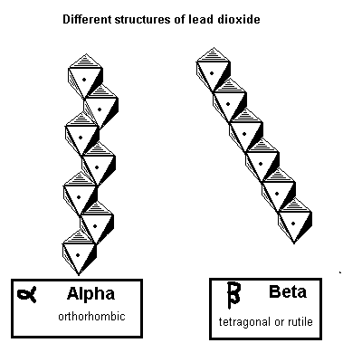
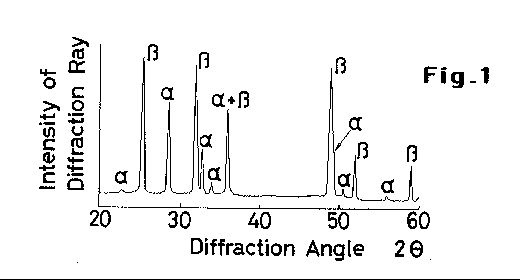
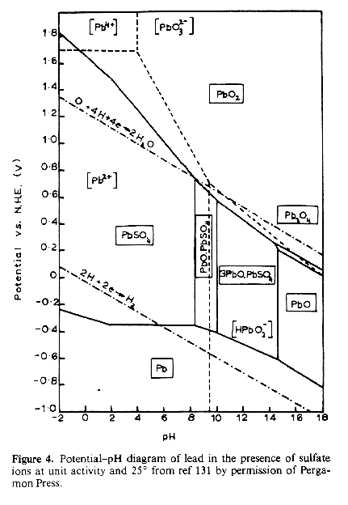
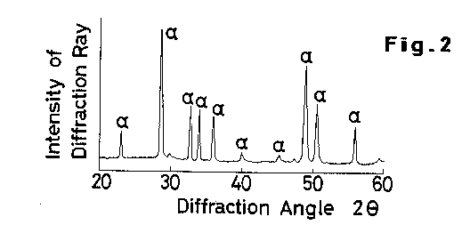

Lead Dioxide is highly conductive and is more conductive than most metals.
This is because of the deficiency of Oxygen atoms in its crystal lattice which
leave charged carriers available in the crystal lattice. The Alpha Lead Dioxide is slightly more conductive that the Beta,the
resistivity of Alpha being 10^-3 and Beta being 4 * 10-3
Ohm cm.

Figure 1 is an x-ray diffraction pattern indicating the structure of
electro deposited Lead Dioxide. Most of the Lead Dioxide deposited from the Lead
Nitrate bath is Beta Lead Dioxide. Figure 2 is an x-ray diffraction pattern indicating the structure of Lead
Dioxide that was deposited by the soaking and oxidising process (See US PATENT
No.4,008,144)

The above diagram shows the stability of Lead ion in sulphate for a range of
pH's.
HIT THE BACK BUTTON ON YOUR BROWSER
Lead Dioxide is not
stoichiometric. It formula could more accurately be described as PbO1.98
Some properties of Lead Dioxide
Molecular weight
239.21
Density
9.37g/cm2
Melting point
Decomposes
Decomposition point
290C
Solubility in water
Insoluble
Solubility in HCl
Soluble
Solubility in nitric acid + H2O2
Soluble
